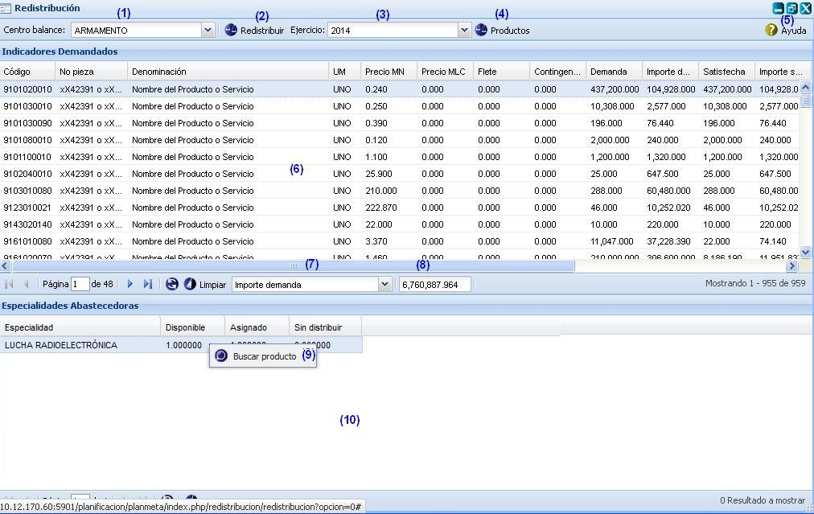

-- Redistribución --
Esta funcionalidad le permitirá efectuar la redistribución de cada uno de los productos ociosos (indicadores) por los diferentes Centros de balance que lo necesiten, de acuerdo a la priorización dada a cada uno en la funcionalidad: “Priorizar centro de balance por especialidad”. Para llegar a esta funcionalidad se puede acceder a través de la opción Inicio\Planificación material\Balance material\Redistribución. A la misma solo tiene permiso el Órgano Rector.
Nota: es importante tener en cuenta que se le llamará productos ociosos aquellos indicadores que fueron planificados para un centro de balance en específico y que a su vez no fueron usados o la cantidad planificada excedió a lo que realmente necesitaban, quedaron en almacén.

Figura 1. Interfaz y acciones de la funcionalidad Redistribución.
Las diferentes opciones que conforman la figura anterior permiten:
- Seleccionar el centro de balance.
- Redistribuir indicadores. Una vez invocada esta acción, el sistema mostrará un mensaje de confirmación, que se puede Aceptar o Cancelar según desee. Si presiona el botón Aceptar del mensaje de confirmación el sistema mostrará un mensaje de información notificando que se realizo la acción satisfactoriamente, redistribuyendo así cada uno de los indicadores del Centro de balance seleccionado por los demás Centros de balance de acuerdo a su priorización. De presiona el botón Cancelar el sistema cancela la acción y no ejecuta la funcionalidad.
- Seleccionar el ejercicio. Esta funcionalidad le permitirá seleccionar el ejercicio por el que desea efectuar la redistribución de los indicadores. Inicialmente cada una de las acciones a ejecutar las realizará sobre el ejercicio actual.
- Productos.
- Mostrar ayuda de la funcionalidad. Se puede realizar esta acción de manera rápida con la combinación de las teclas (Alt + H).
- Listar indicadores demandados.
- Seleccionar el importe a mostrar en la opción (7).
- Mostrar el importe.
- Buscar producto. El sistema mostrará una interfaz permitiendo buscar el producto. Para realizar esta acción se debe dar clic derecho encima de la especialidad que quiere buscar el producto.
- Listar las especialidades abastecedoras.